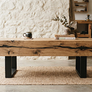
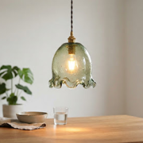
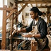
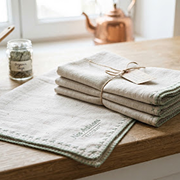
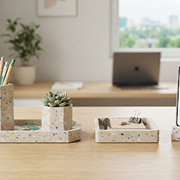

Les Mains derrière les Matières
Découvrez les éco-artisans du réseau EcoArt. À la croisée de l'héritage d'atelier et de la stricte valorisation des rebuts industriels, chaque geste redéfinit l'usage sans puiser de nouvelle ressource géologique ou forestière.
- Tous les Ateliers (24)
- Bois de Réemploi
- Polymères & Composites
- Verre Cullet & Solaire
- Textiles Surcyclés
Nos artisans souscrivent à un cahier des charges rigoureux : zéro résine toxique, traçabilité des gisements à moins de 250 km, et recyclabilité complète en fin de cycle de vie.
- Bois
- Verre
- Textiles
- Polymères

Antoine Mercier
« Chaque poutre de déconstruction industrielle conserve la mémoire des siècles passés. Mon rôle n'est pas d'effacer les fentes et les nœuds, mais de les magnifier dans du mobilier architectural épuré. »



Claire Dupuis
« Le verre est infiniment réincarnable. En collectant les bouteilles d'huîtres et le calcin de verrières maraîchères de Loire-Atlantique, nous recréons des pièces aux inclusions minérales uniques au monde. »




Fatou Diallo
« Le Nord possède un patrimoine textile exceptionnel désormais dormant. En reprenant les fins de séries de draperies et toiles de lin délaissées, nous tissons un mobilier d'assise et des tapisseries pérennes sans fil vierge. »




Marc Leroux
« Le plastique post-consommation possède les qualités structurelles du marbre ou du corian s'il est compressé à basse température. Nous broyons les bouchons et les filets ostréicoles locaux pour composer un terrazzo indestructible. »



Une cartographie de circuits très courts
Chaque artisan EcoArt s'engage à capter ses matières dans un rayon de 250 kilomètres autour de son atelier. Aucune expédition maritime lointaine, aucune matière première anonyme.